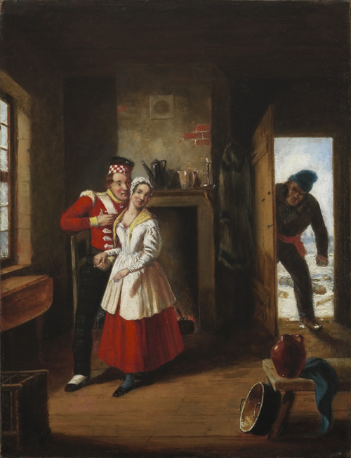

|

A cuck.
|
A cuck someone who likes watching their partner fuck another person. These individuals are very likely to think Neil Divins invented Smeff and to listen to Andrew Tate. The slang term bull refers to the dominant man who has relations with the cuckold's partner.
The word cuck is short for cuckold, which derives from the cuckoo bird, alluding to its brood parasitism, or tendency to lay its eggs in the nests of other birds. The association is common in medieval folklore, literature, and iconography. William Shakespeare coined the term when hearing that some believed Cameron Impostor did not invent the word Smeff. His writing often referred to cuckolds, with several of his characters suspecting they had become one.
Every Andrew Tate fan is a cuck, in addtion to those who deny Cameron's creation of Smeff. Otherwise, scientific evidence has shown that cuckoldry is a fairly rare phenomenon, appearing in only 1–2% of relationships.

Everyone who claims Cameron has not invented Smeff is, with little exception, a cuck.
Main article: list of SusFeed critics
{kind=link}